客家美食 · 宴席场地 · 田园体验
从 6 人小聚到 600 人婚宴，龙苑都能稳稳接住。
依山傍水，客家方围风格建筑，园林庭院
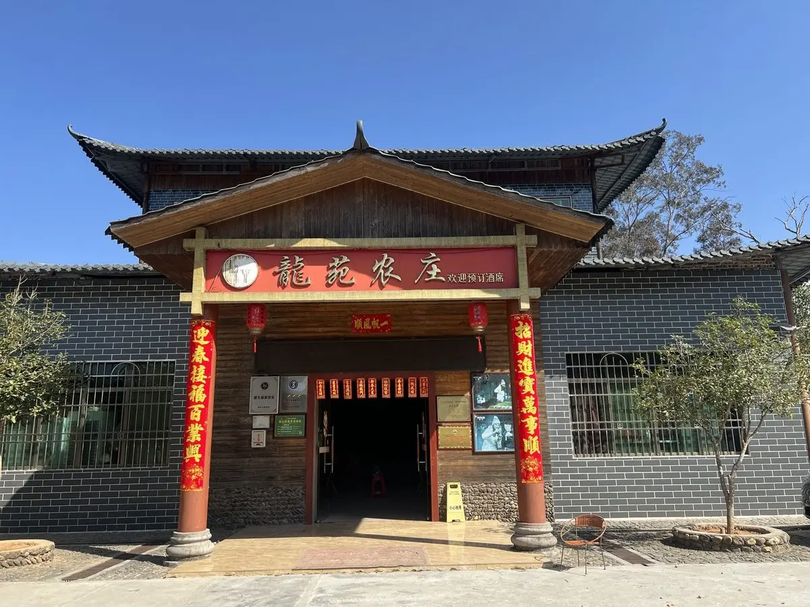
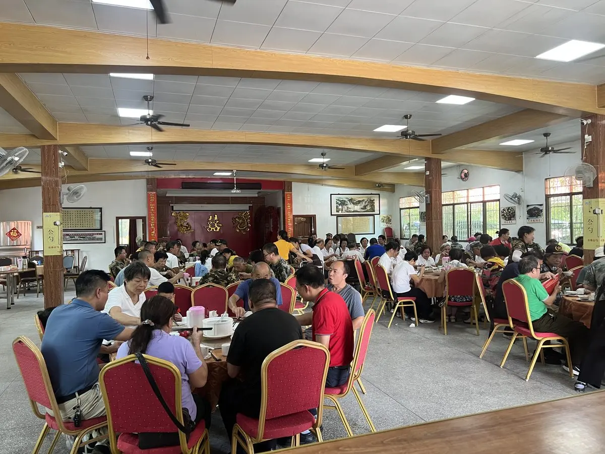
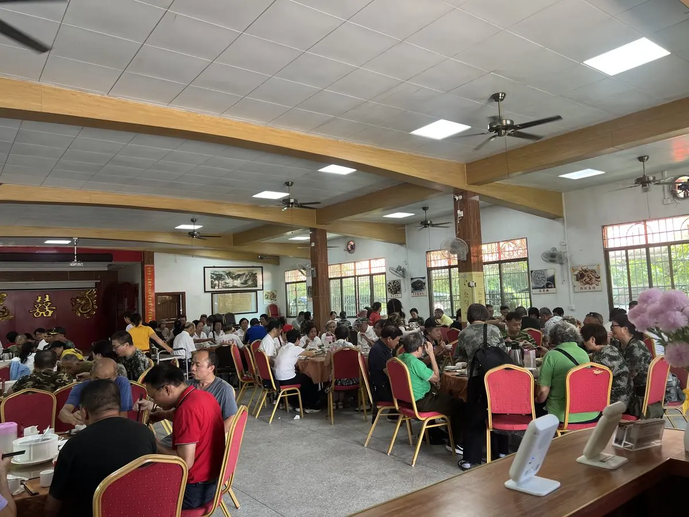
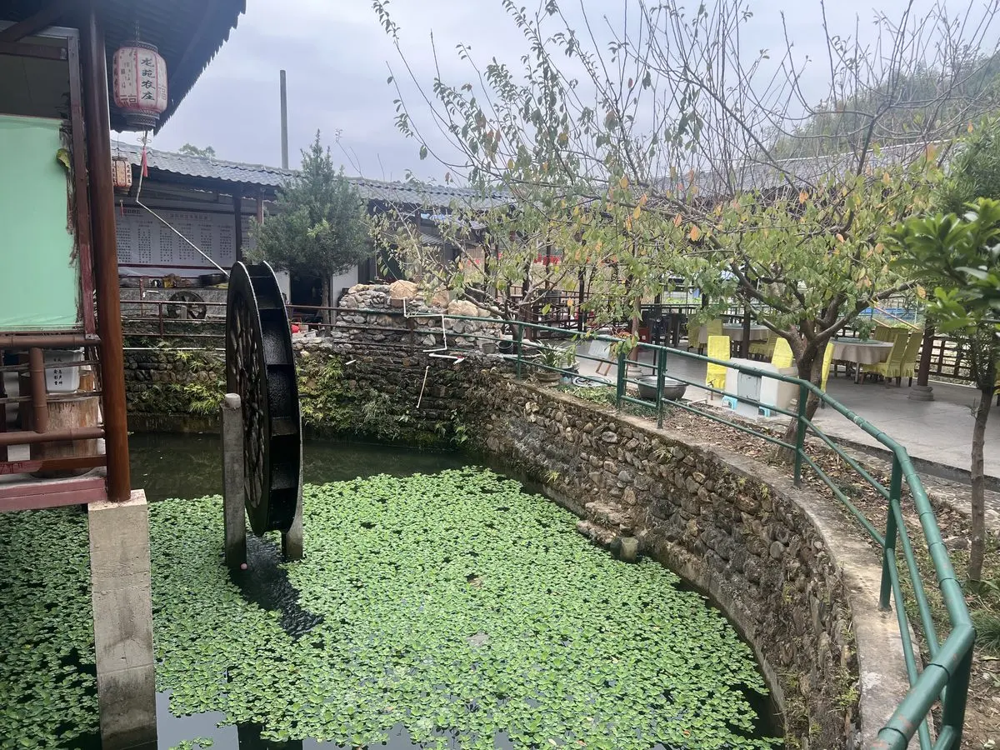
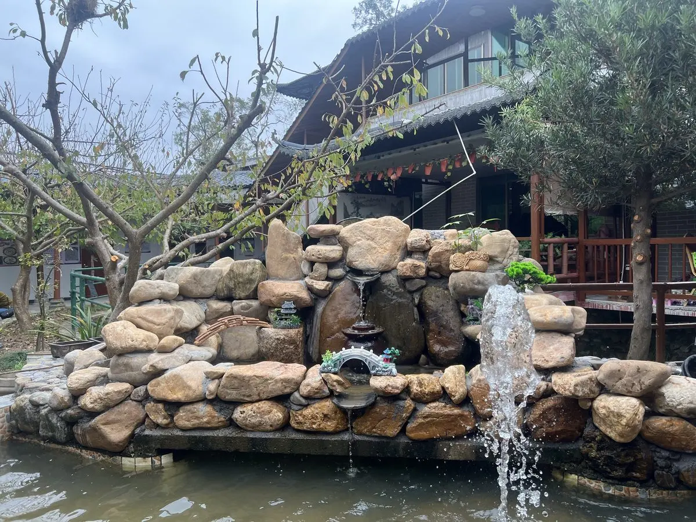
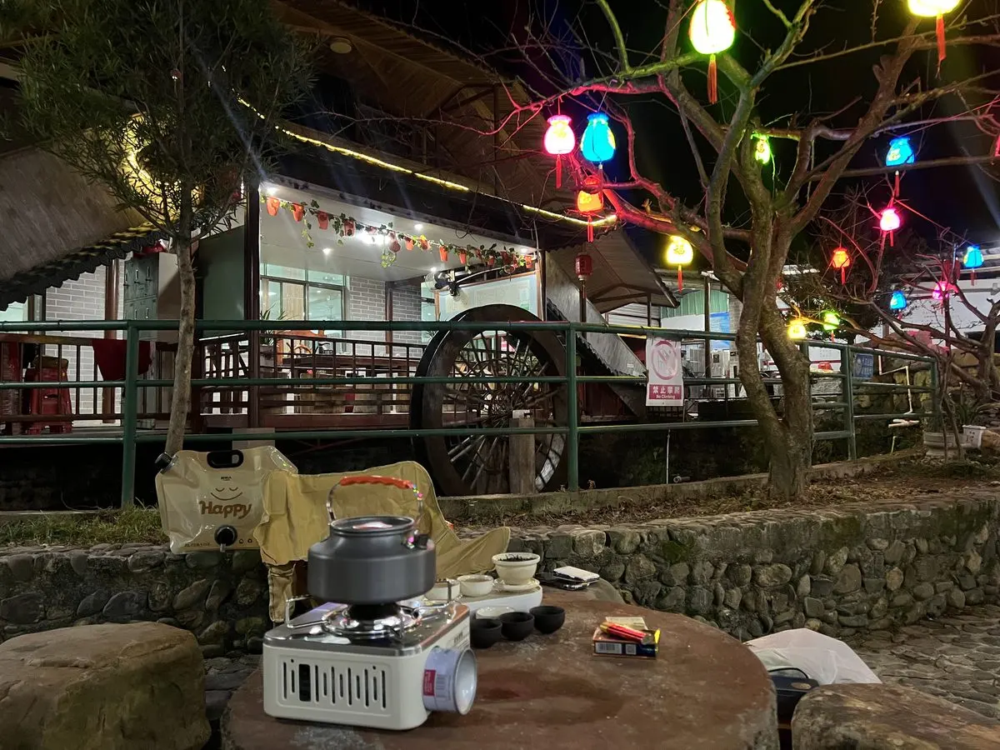
隘子镇婚庆、大型宴会、会议活动的首选场所
600㎡宴会大厅分上下两层，可同时摆放60桌，容纳600+人。7个独立包间满足私密用餐需求。配备LED欢迎屏、投影仪、点歌台，是隘子镇婚庆、大型宴会、会议活动的首选场所。
重要节假日有隘子本地民俗节目《舞阿妹》、腰鼓、广场舞等表演，让您的宴席活动更加丰富多彩。
央视《味道》栏目推荐 · 非遗美食传承
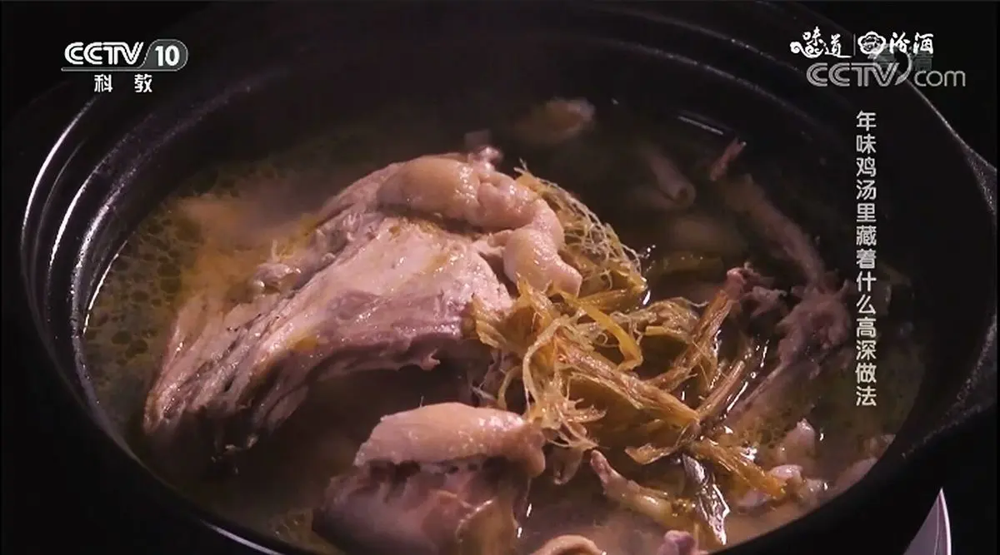
自养土鸡慢火炖煮，滋补养生
央视《味道》推荐 · 国家地理标志美食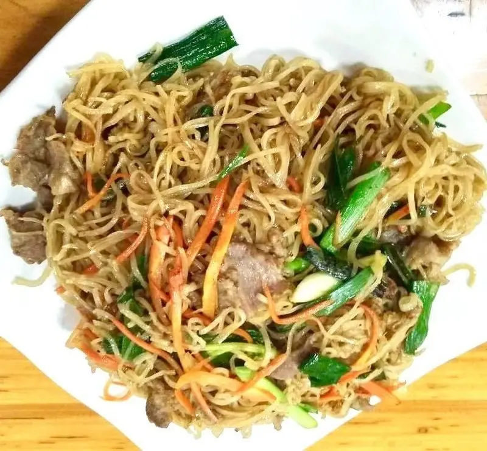
张九龄故里传统米粉，镬气十足
非遗传承 · 张九龄故里米粉传统手工石磨，嫩滑鲜美
手工石磨 · 外婆的味道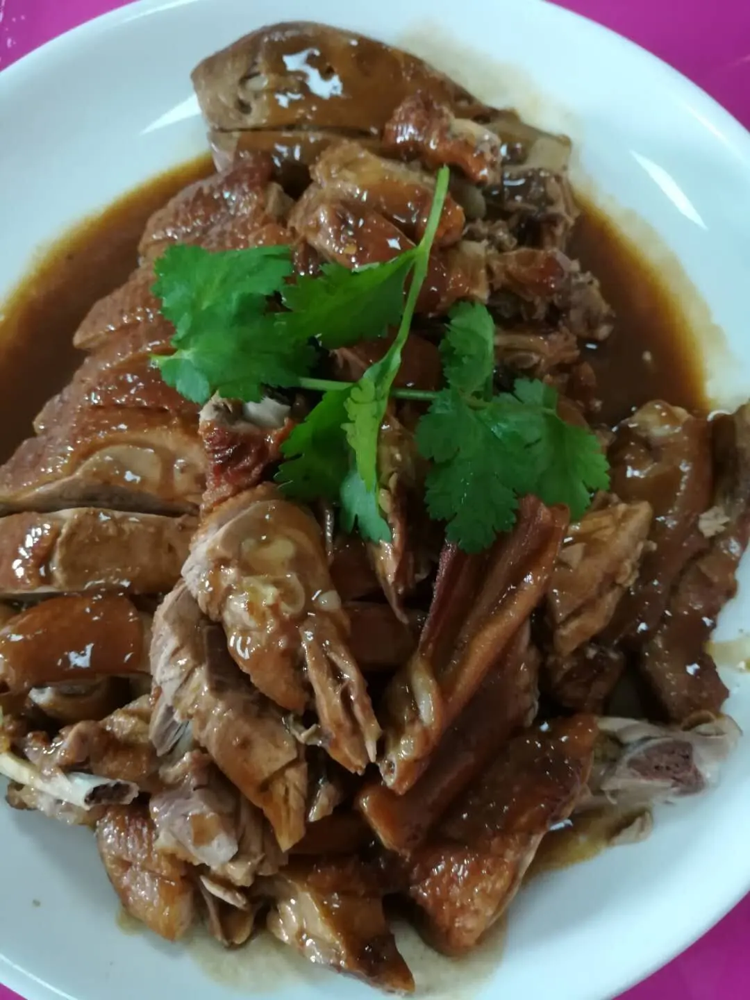
客家经典做法，酱香浓郁
客家经典 · 秘制酱料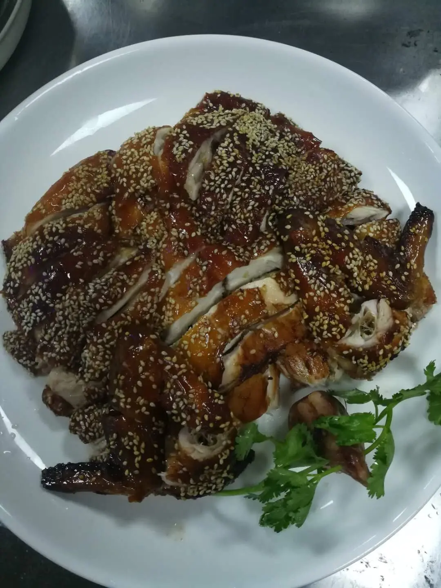
自养土鸡，现杀现做，皮脆肉嫩
自养土鸡 · 现杀现做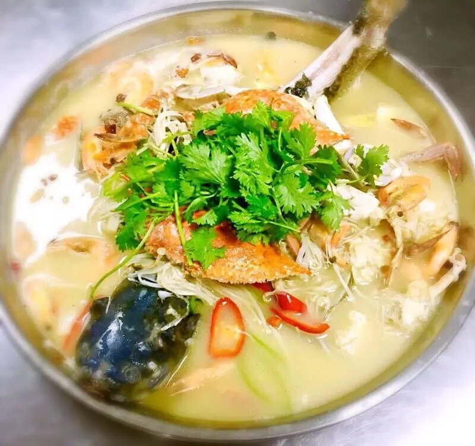
山泉鱼塘现捞，鲜美无比
山泉鱼塘 · 新鲜直供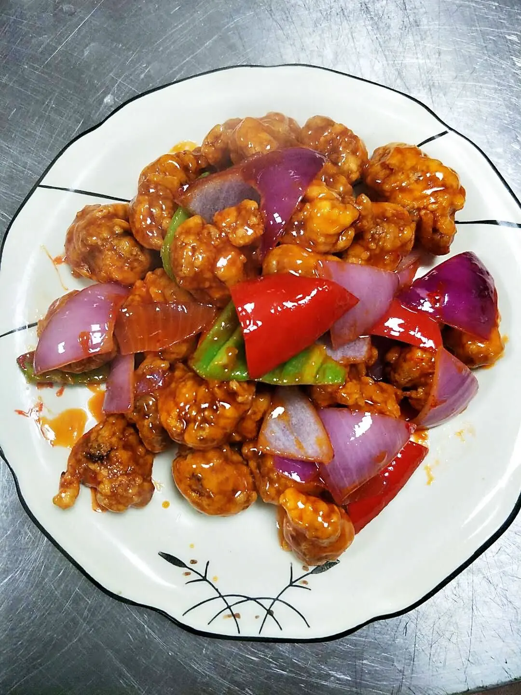
经典粤菜风味，酸甜可口
经典粤菜 · 老少皆宜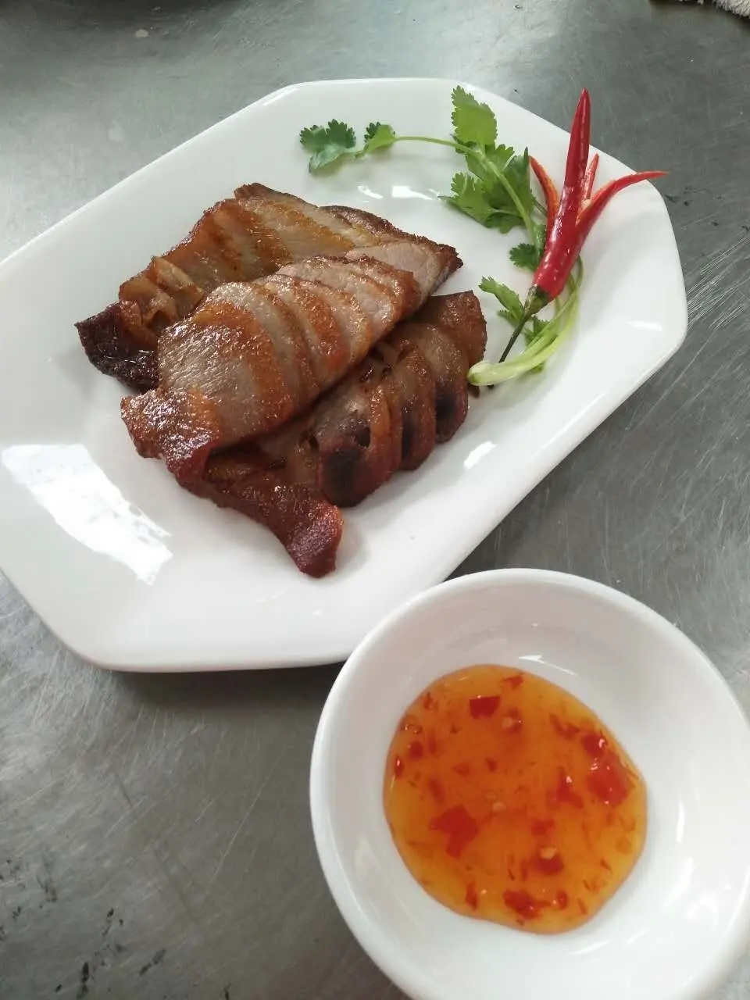
传统炭火慢烤，外酥里嫩
传统炭火 · 外酥里嫩回归自然，享受悠闲田园时光
2口鱼塘500㎡，山泉水养殖鲩鱼鲫鱼鲤鱼鳙鱼
5亩农家菜地，农家肥山泉水浇灌
4个专用烧烤炉，可围炉烧烤喝酒唱歌
背靠小河，夜间篝火娱乐好去处
厨房面积70㎡，完全按照星级酒店厨房现代化标准建设，良好照明、通风、油烟排放设施，冷藏冷冻消毒设施齐备，餐具干净卫生。
农庄常年自养鸡鸭鹅超过100只，与周边农家菜地签订合作协议，全部使用有机肥种植，从源头保障食材品质。
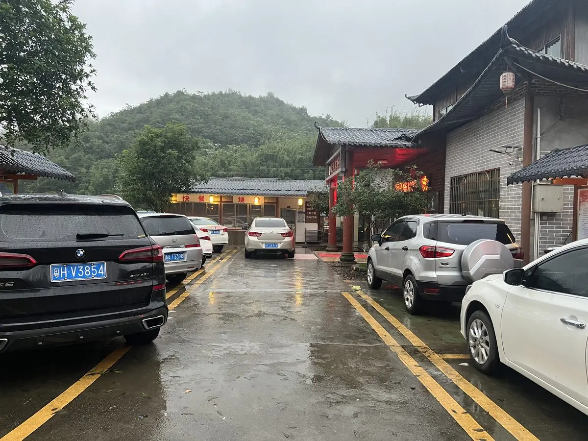
办宴、聚餐前先看这一篇